BioModME: Biological Modeling Made Easy
Accessing BioModME
BioModME was built using the Rshiny framework with the injection of customized HTML/CSS and javascript. As such, it is availble as a fully deployed web application hosted by CTSI of the Medical College of Wisconsin. Additionally, source code is provided for the application to be run locally.
Note
Online Server is a good option that requires no download of application or knowledge of running R.
We intend to package the application with Electron to have a fully deployable version.
Use Online Server
BioModME is hosted on webservers at the Medical College of Wiconsin by the Clinical & Translational Science Institute (CTSI) of Southeast Wisconsin. It can be accessed at:
Download Locally
BioModME can be run on your local system using R.
Install R and RStudio
R and RStudio will need to be installed (tested locally with R 4.1.1 and RStudio 1.4.1717). Please check CRAN for the installation in R ( https://cran.r-project.org).
For the installation of RStudio, go to and follow instructions from https://www.rstudio.com.
Download BioModME from Github
Option 1 - Using Git Bash:
Open Git Bash
Change the current working directory to the location where you want the cloned directory.
Enter the following command
git clone https://github.com/MCWComputationalBiologyLab/BioModME.git
Press Enter to create your local clone of the application.
Option 2 - Direct Download:
Navigate to https://github.com/MCWComputationalBiologyLab/BioModME.
Click the green button “<> Code”.
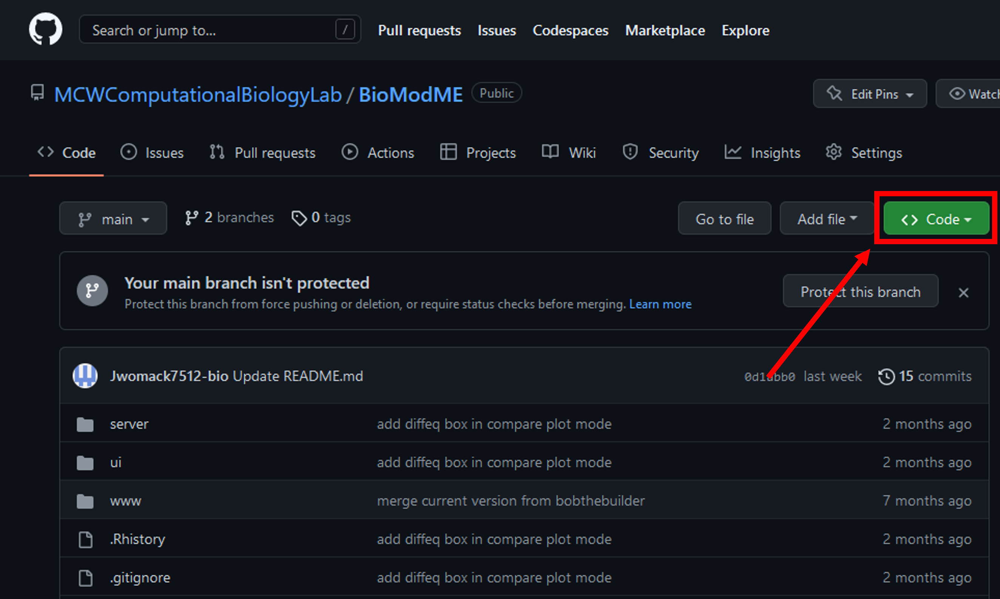
Press download ZIP
Unzip folder in desired location.
{kind=link}
Install R Repositories
BioModME uses a vast number of standard R repositories that will need to be downloaded. Open up the UI.R file from the downloaded file. This script loads all the needed libraries for the application to properly run. To install these repositories you can run the following:
# Vector of package names to install
load.lib <- c("shinydashboard", "bs4Dash", "shiny", "ggplot2", "gridExtra","shinythemes",
"shinyWidgets", "shinyjs", "DT", "tidyverse", "dplyr", "rhandsontable", "data.table",
"ggpmisc", "colourpicker", "shinyBS", "shinyjqui", "bsplus", "deSolve", "plotly",
"Deriv", "viridis", "ggpubr", "shinycssloaders", "waiter", "fresh", "readxl",
"minpack.lm", "measurements", "qdapRegex")
# Remove any packages from list that are already installed
install.lib <- load.lib[!load.lib %in% installed.packages()]
# Install all packages in install list
for (lib in install.lib) install.packages(lib, dependencies = TRUE)
sapply(load.lib, require, character = TRUE)
All the required packages should now be installed.
Start Application
The application can be started from base R by navigating to the application home folder and running the following:
shiny::runApp()
A more common way to run the app is to run it directly from RStudio. This is done by:
Open either “ui.R” or “server.R” in RStudio
Press bottom in top right of script that says “Run App”.

Pull Docker Image
The application has been created as a docker image for user convience if they wish to run the app locally without installing R or worrying about other possible dependencies.
Download Docker
In this section, we will download docker to our computer. This will install the desktop app but what we really need is the docker terminal commands to be added. If you have a working version of Docker on your system, skip to the next section.
Download docker for your respective system. This tutorial follows the windows download.

Go to you downloads folder and begin the system install of docker. This download will take a few minutes.
A configuration popup will appear. Keep “Install required Windows components for WSL 2” checked. You can uncheck the desktop shortcut option if you want.
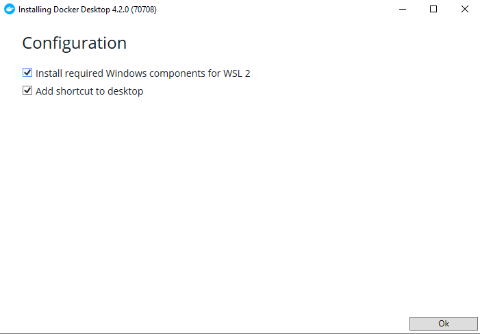
Once download is complete a message will appear to restart your system. Perform computer restart.
On restart you may get a notification that “WSL 2 installation is incomplete”. If this is the case you will need to install this update or the docker image will not run. Follow the link on the popup, it takes you to the following link: https://docs.microsoft.com/en-us/windows/wsl/install-manual#step-4– -download-the-linux-kernel-update-package}{https://docs.microsoft.com/en-us /windows/wsl/install-manual#step-4—download-the-linux-kernel-update- package. Download and install the kernel from this link.
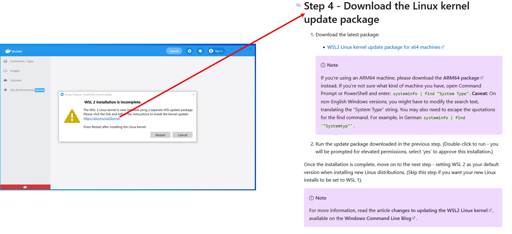
Restart computer again and open docker program. It should be fully installed and working now. A working program has a green color in the bottom left corner and lacks a huge error message in the center of the application.
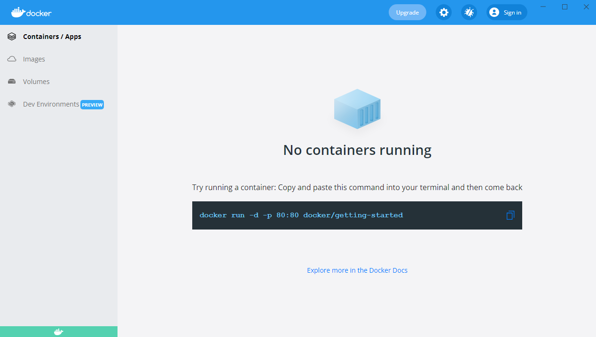
Note: A Docker account does not need to be made in order to pull and run this program.
Pull/Run From Docker
With docker installed, we can now use the command line to pull the program we desire, meaning we can download it to our computer from the docker cloud.
Open the computer’s terminal (command prompt).
Type the below command to pull the application from the docker cloud (this takes approximately five minutes):
docker pull jwomack7512/biomodme
Type the following command to run the application:
docker run -dp 3838:3838 jwomack7512/biomodme
This step might need approval from windows defender or other antivirus program.

The above command runs the program at a loack host port. To access the app, open your web broswer and type the following:
localhost:3838
The application should now load on the opened webpage.
Loading Application After Pull
After the image has been pulled once, there is not a need to repull it. The image should be saved to your local docker program and can be loaded easily using the Docker Hub GUI.
Open docker and navigate to the “images” tab. Here you should see a copy of the image you pulled in the previous step. This means its available without having to repull it.
Scroll over the image jwomack7512/biomodme. A “run” button will appear. Press that button.

A popup will appear. Click the dropdown arrow to show optional settings. Here we give the container the name “bioModMe”. If you do not give it a name, docker will randomly generate one. Type in “3838” in Local Host. This is necessary or the program will not load to the proper port the Rshiny app specifies. Press the “Run” button.
Go to the “Containers/Apps” tab in Docker Hub. You should see the container you created with a note saying it is running at port 3838. You can access the app by simply clicking the “Open in Browser” button. Note: you may already have a container built from using the command line, meaning you could just run that one instead of rebuilding it in the previous steps.

{kind=link}
In the above figure, if you double click the container the logs will open for the application. These can be useful for debugging and submitting errors.
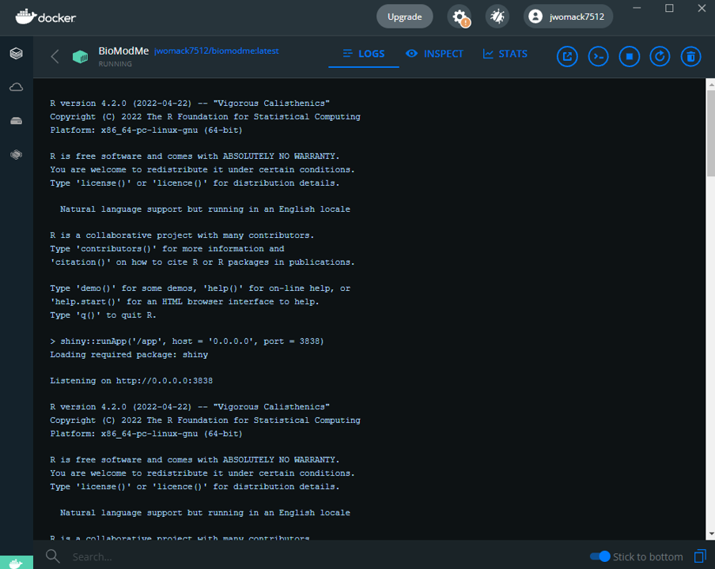
Page Layout
Mathematical Derivations
This section covers all the mathematical equations and derivations that run in the background of BioModME.
Equations
This section contains the mathematical derivations used for the equation builders found in this program.
Chemical Based Equations
Law of Mass Action
Chemical reactions are derived using the law of mass action. Given the following chemical reaction scheme:
where a, b, c, d are stoichiometic coefficients and A, B, C, D are the chemical species. The law is as follows:
From the above law, each individual term can is derived below:
Each individual equation will be added to their overall flux differential equation in the differential equation solver section.
Law of Mass Action with Regulation
Mass action with regulation is for chemical reactions who have rate constants that are dependent on other species. An example is the regulation of inactive MPF to active MPF in the cell cycle by WEE1 and CDC25Cp. In this example, inactive MPF is phosphorylated by CDC25Cp and dephosphorylated by WEE1. These regulators are not directly affected in the their differential equations in this situation while inactive and active MPF are. We have the same derivation as mass action except the rate constants are changed to reflect the regulation.

The regulators will take the respective place of the rateconstants in the mass action derivation. In the mass action derivation above for “a” and “b” we have:
Adding regulator replaces the respective rate constant with the sum of its regulators and rateconstants:
Using the above example, we get the following result:
Enzyme Based Equations
Michaelis Menten
Michaelis Menten kinetics is the most common approximation for describing the rate at which enzyme reactions occur. The model most commonly takes the following for describing the velocity of a reaction:
where,
- \(V_{max}\)
Maximum Velocity
- E
Enzyme Concentration
- S
Substrate Concentration
- P
Product Concentration
- \(K_M\)
Michaelis Menten Constant
- \(k_{cat}\)
Catalytic Rate of Enzyme Reaction
Synthesis Reactions
Synthesis
Synthesis by rate has a species generated at a specific rate. This is useful for when the user does not particularly now what is causing the synthesis but knows how quickly it is being produced. It simply creates a constant rate of production.
where,
- \(k_{syn}\)
synthesis rate of species
Synthesis by Factor
The “By Factor” law is used when a factor directly influences the synthesis of a species but is not directly converted. An example of this is in the Cell Cycle when the molecule E2F activates transcription factors that synthesize Cyclin E and Cyclin A. If the cell contains no E2F, then there is no synthesis of Cyclin E or A.
{kind=link}
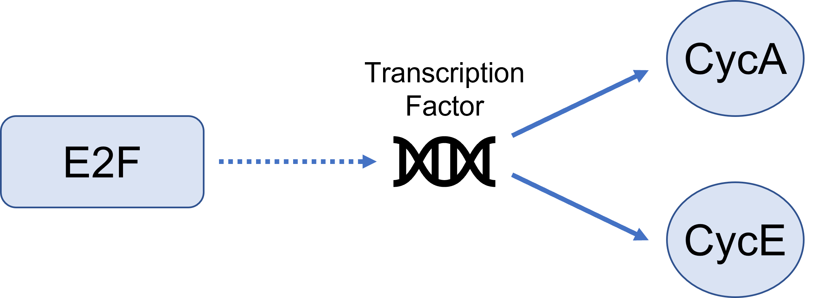
There is only one resultant mathematical flux from this type of synthesis and that is the species being synthesized. The factor causing the synthesis does not have its flux altered. The general resulting equations are:
where,
- \(k_{syn}\)
synthesis rate of species
- Species
species that is being synthesized
- Factor
factor that is causing the synthesis
In realtion to the above E2F equation, the differeneital equations are:
Degradation Reactions
Degradation
These reactions are dependant on a rate constant. Here we have two specific options where the degradation can be concentration dependent or not. Often degradations are concentration dependent on themselves, meaning there is more degradation at higher concentrations and vice versa. The following is the derivation for a concentration dependent degradation:
where,
- \(k_{deg}\)
degradation rate constant
- Species
species being degraded
When the degradation is not concentration dependent, the resulting flux is:
When products are made they are just the opposite sign of the above reactions. For example for concentration dependent reactions with one degradation to two products we would have the resulting differential equations:
Degradation by Enzyme
This degradation option is a basic enzyme reaction using Michaelis Menten kinetics where the substrate is the species to be degraded and their often is no product. The resulting mathematical flux for the degraded substrate would be:
where,
- \(V_{max}\)
Maximum Velocity
- E
Enzyme Concentration
- S
Substrate Concentration
- P
Product Concentration
- \(K_M\)
Michaelis Menten Constant
- \(k_{cat}\)
Catalytic Rate of Enzyme Reaction
There is an option to add a product (P), which results in the mathematical flux equations to break down to pure Michaelis Menten kinetics for the product and substrate which would have the same equation above except with a positive sign:
Input/Output
This section contains the mathematical derivations used for the input/output builders found in this program.
Flow Between
Flow between two or more compartments follow the mechanics described below. In the below figure, we have flow between two compartments. We have species \(A_1\) flowing out of compartment 1 into compartment 2 as \(A_2\).
{kind=link}
The flows from a compartment are derived as the flow rate (F) multiplied by the concentration of the species leaving the comparment as a minus term. Flow to a compartment is the same derivation without the minus term. The flows in the above diagram would be derived as:
Split Flow
Often times we need to split the flow from one compartment to multiple compartments. This option splits the flow from one compartment to go to multiple compartments. In the figure below, we see the flow from compartment 1 is split to go to compartment 2 and compartment 3.
{kind=link}
The summation of the output flows will be equal to the input flow:
Given the above figure this equation derives out to:
The resulting flow differential equations derive as:
Flow In
Constant flow into a compartment from an unspecificed source. This could be something like an input flow into a model of species or a known constant flow from a source outside the scope of your created model. Flow In and Flow Out options can also be pieced together to create a customized Flow Betweeen. In the Figure below, we see a constant flow, F, carrying species, A_1, into Compartment 1.
{kind=link}
The mathematical derivation for this model input would be:
Flow Out
Constant flow out of a compartment that does not go to another compartment. Flow In and Flow Out options can be pieced together to create a customized Flow Betweeen. In the Figure below, we see a constant flow, F, carrying species, A_1, out of Compartment 1.
{kind=link}
The mathematical derivation for this model output would be:
Clearance
Clearance from a compartment is used when a species leaves the compartment and is removed from the model. In the example below, we have species \(A_3\) being cleared from compartment 3.
{kind=link}
It takes the following derivation:
where,
- \(k_e\)
Rate of clearance
- \(A_3\)
Concentration of Species being cleared
- \(V_3\)
Volume of compartment that species is being removed from
Simple Diffusion
In simple diffusion, the substance is driven by concentration difference across a membrane. In the example below, we have a liver compartment that is separated into blood and liver compartments with a passive diffusion membrance for compound A.
{kind=link}
For the simple, one dimensional case shown above, the mass flux through the membrane follows Ficks Law:
where,
- C
Concentration at membrane location x
- D
Diffusion coefficient of the molecule
We assume the concentration gradient across the membrane of thickness, x, falls linearly with x leading to:
The rate of transfer (f) of a neutral compound across a biological membrane of surface area (S) is:
where,
- PS
Coefficient of diffusivity
Note: The negative sign on the right side of the equation indicates that the net transfer due to diffusion is in a direction away from the region with highter concentration.
Units on page:
- C
\(\text{conc}\)
- D
\(\frac{\text{length}^2}{\text{time}}\)
- PS
\(\frac{volume}{time}\)
Facilitated Diffusion
Facilitated diffusion is a type of diffusion in which the molecules move from the regions of higher concentration to the region of lower concentration assisted by a carrier molecule. It is a selective process, only allowing specific molecules to pass the gradient. In the below figure, we have a liver compartment that is separated into blood and liver compartments with a facilitated transportor for compound A. Note that this is a one way transport.

For the derivation of the flux equation for facilitated diffusion, we take the following equation:
where,
- \(V_{max}\)
Maximum Velocity
- \(S_{o}\)
Substrate Concentration
- \(K_{m}\)
Affinity of how much substrate concentration needed to reach \(V_{max}\)
The flux derivations for the above example would be:
ODE Solvers
This section covers the differential solvers logic.
Parameter Estimation
This is the parameter estimation documentation.
Link to Parameter Estimation Tutorial
Units
This section will cover all thing units. What units are allowed, how changing units works, and how conversions are performed (maybe).
Basic Tutorial
This tutorial covers basics features of BioModME by building a simplified, single compartment model. In this example, we focus on a set of reactions occurring in a cell. Compound “A” is synthesized by “Prot” at a constant rate and reacts with a limited supply of compound “B” found in the cell to make an intermediate “C1”. C1 undergoes an enzymatic conversion to “C2” and this new intermediate undergoes self-cleavage to the desired end product, “P”, and an inhibitor, “I”, of Prot. This inhibitor feedback binding to Prot stopping the synthesis of A, and thereby the entire reaction scheme.

In the following sections of this tutorial, we will design the above system and look at how this program can be used to visualize and modify the data. The contents include the following:
Creating model variables
Building a system of equations
Entering the inputs and outputs of the system
Inputting numerical parameter values
Solving and plotting the differential model
Exploring the different types of plotting features
Exporting the model and its features in meaningful ways
To use the online version of this application visit https://biomodme.ctsi.mcw.edu/. Note this app is stored on an Rshiny server that close unused applications after 15 minutes of inactivity. Your current model can be downloaded in the “Export” tab as an .RDS file and can be loaded in by opening the right sidebar of the application. The application can also be directly downloaded at https://github.com/MCWComputationalBiologyLab/BioModME and opened using the R programming language using stand shiny app protocol.
Constructing Model
This section will cover how to build and construct a model.
Define Variables
The application loads on the “Create Model” tab. Here, we will build our model, setting up variables, equations, and parameters. Each of these components are their own box on the page. On load, the application will create a starting compartment named “comp_1”, which can be seen in the “Compartments” box. Click on the “Name” cell of the table to change the compartments name (cell). We will also change the volume name here (V_cell). In a single compartment model, the physical volume is not of much importance so we will leave that as a value of 1 to avoid any model scaling effects.

Next, the model species will be added. To add a species, move to the next box (“Species”). Here we press the button with a plus icon to add species whose information can be edited in the table.

We will add nine species to the model and then rename them appropriately: Prot, A, B, C_1, C_2, Enz, P, I, I.Prot

The second column of the species is “Value”, which is the initial amount of that species in the model. For this model we have the following initial concentrations:
Prot = 3
A = 0
B = 5
C_1 = 0
C_2 = 0
Enz = 0.5
P = 0
I = 0
I.Prot = 0

Lastly, if desired, we can add descriptions to our species to remind ourselves (or let other users) know what the species in the model are. Below, we have entered brief descriptions the beginning species. Editing can be done by clicking the appropriate cell in the species table.

Create Reactions
Scroll down to the “Reactions” box in the “Create Model” tab. In this section we will build up the sets of reactions that make up our reaction network. Press the “+” button to begin adding equations.
Equation 1 - Law of Mass Action, Reversible
{kind=link}
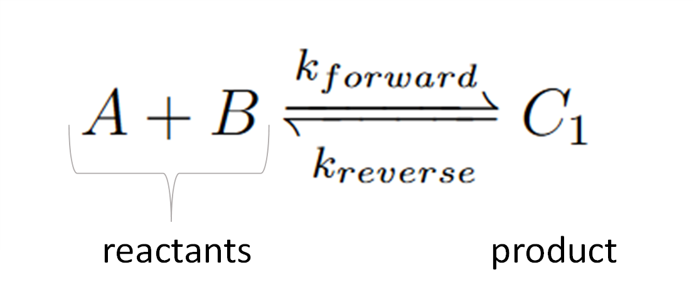
Chemical reactions like this follow the law of mass action. This first equation is a reversible reaction. The equation consists of two reactants, one product, and moves in both directions where are forward rate constant is “k_f1” and our reverse is “k_r1”.
This reaction input can be seen in the below figure. The steps for the following equation are:
Select “Chemical Reaction” for equation type.
Select “Mass Action” as the law.
Select “Reversible” as the reaction direction.
Set the equation to have two reactants and one product.
Fill out equation information. Rate constant names are autogenerated for all equation types using the number of the current equation as their number at the end.
This is the equation builder that shows what your built equation looks like.
Press the “Add Equation” button.

Equation 2 - Michaelis-Menton Kinetics

Next, we enter the second equation, conversion of C1 to C2 by the enzyme “Enz”. These reactions follow Michaelis-Menten kinetics. Figure 7 shows how this equation looks entered the program.
The steps are as follows:
Change the Reaction Type dropdown to “Enzyme Based Reaction”.
Select “Michaelis Menten” as the Law.
Enter the equation information into the builder.
Press the “Add Equation” Button.
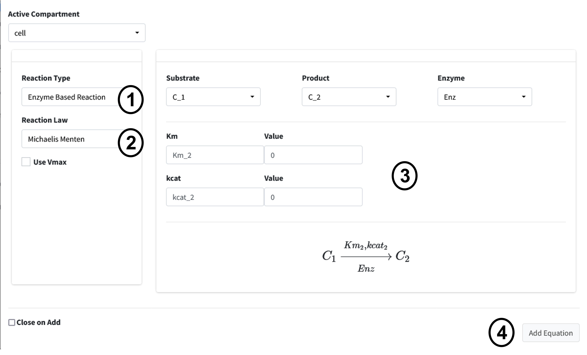
Equation 3 - Law of Mass Action, Unidirection

The next reaction is a conversion of C2 to product P and inhibitor I. This is a one directional reaction with one reactant and two products following the law of mass action.
Change the Equation Type dropdown to “Chemical Reaction”.
Select “Mass Action” as the Law.
Change the reversability option to “Irreversible”.
Set the Number of Reactants to “1” and the Number of Products to “2”.
Enter the equation information into the builder.
Press “Add Equation” button.
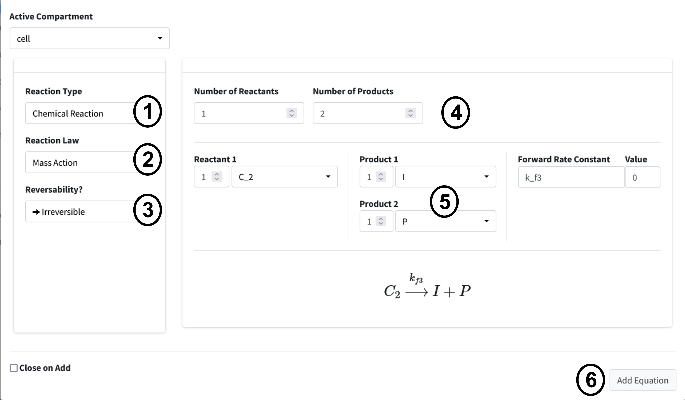
Equation 4 - Law of Mass Action, Unidirection
{kind=link}
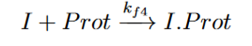
Our next reaction is the inhibitor of Prot. This is another chemical reaction following the law of mass as in Equations 1 and 3 with two Reactants I and Prot converted to I.Prot. The user interface input is below in Figure 9. The steps should be familiar to your by now, but they are as follows:
Change the Reaction Type dropdown to “Chemical Reaction”.
Select “Mass Action” as the Law.
Change the reversability option to “Irreversible”.
Set the Number of Reactants to “2” and the Number of Products to “1”.
Enter the equation information into the builder.
Press “Add Equation” button.
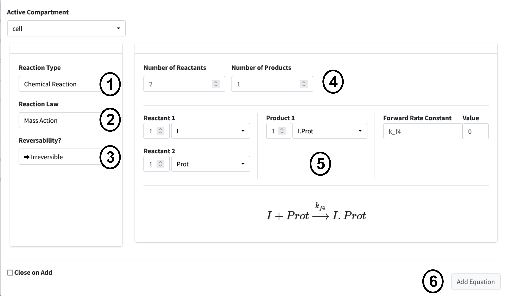
Equation 5 - Synthesis by Factor

Our next reaction is the synthesis of A by Prot, where Prot is a factor promoting synthesis (as opposed to being directly converted).
Set the Reaction Type to “Chemical Reaction”.
Change the Reaction Law dropdown to “Synthesis”.
Click the “Factor Driving Synthesis?” checbox.
Fill out equation builder with the species to synthesize and its corresponding factor.
Press the “Add Equation” button
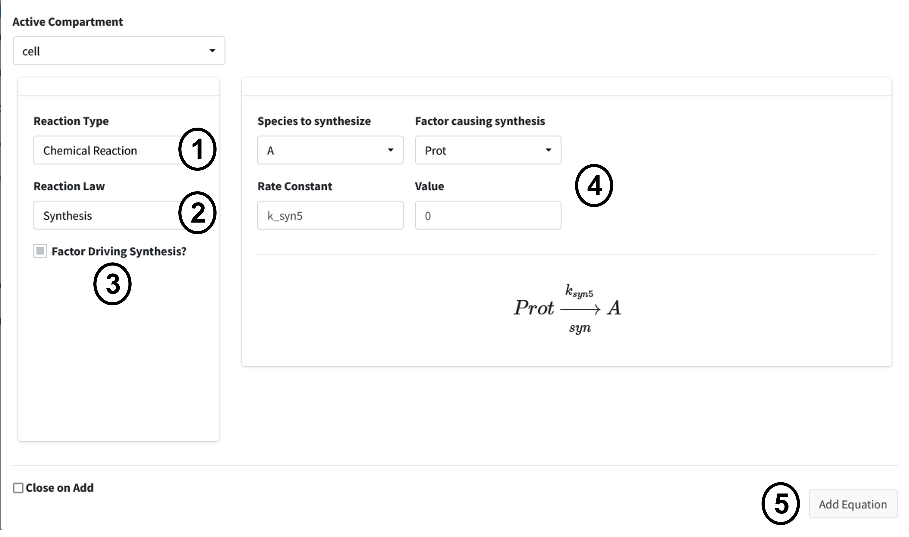
Equation 6 - Degradation by Rate
{kind=link}
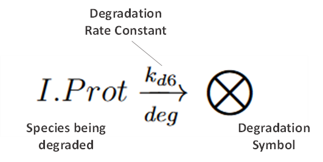
Our final reaction is the degradation of I.Prot by a rate. This is useful for when we know the rate at which a protein is degraded in the cell but do not really know what is causing the degradation. These are often concentration dependent.
Set the Reaction Type to “Chemical Reaction”.
Change the Reaction Law dropdown to “Degradation (Rate)”.
Fill out equation builder with the species to degrade and its rate constant.
Make sure the “Concentration Dependent” box is checked.
Press the “Add Equation” button.
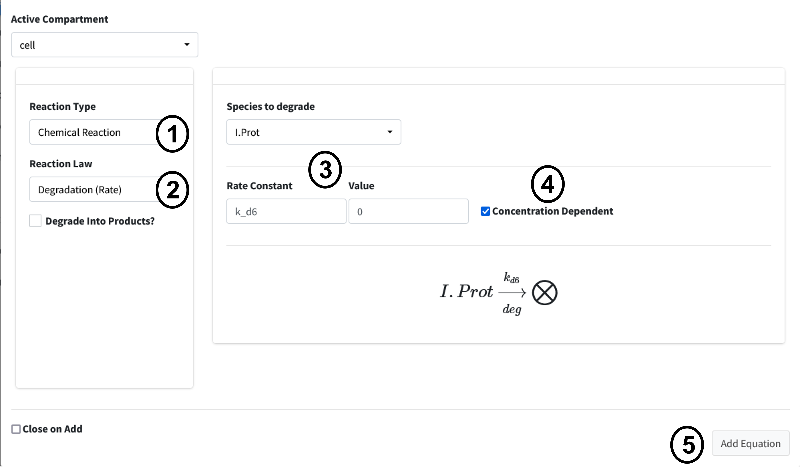
Compartment Input/Output
The next box is the Input/Output box. This box is used to add flow/transfers between compartments. Our model does not have any flows to account for so we will not use this box for anything.
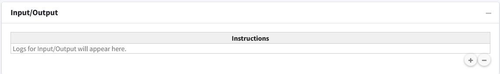
Parameters
Navigate to the next box: Parameters.
Below is the generated parameter table that has been created so far by the above entered information. All descriptions are pregenerated based on where the parameter originated. Like other tables, all values are editable.

The parameter values for the model are as follows:
k_f1 = 2
k_r1 = 1
Km_2 = 0.1
kcat_2 = 3
k_f3 = 2
k_f4 = 2
k_s5 = 0.5
k_d6 = 0.1
The below figure shows the parameter table with the values entered.
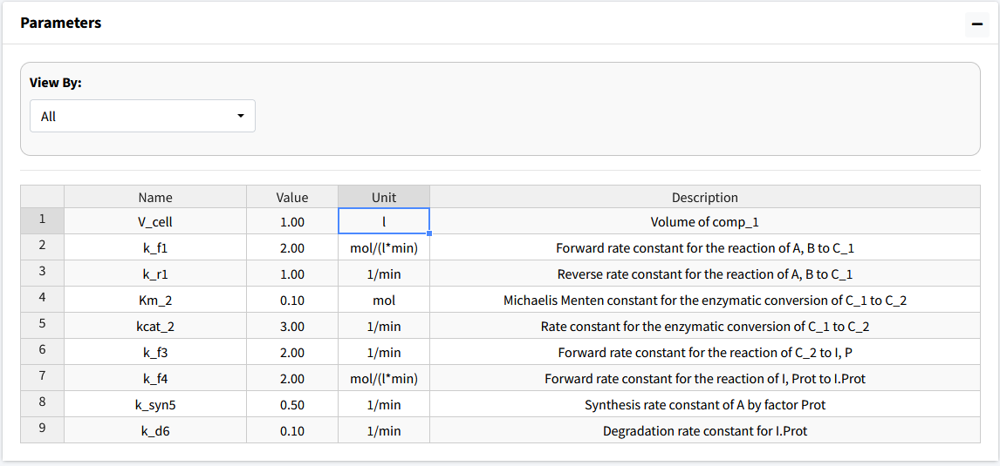
Differential Equations
Navigate to the final box “Differential Equations”.
This tab is used to generate and see the mathematical equations that govern our model. This tab will begin with all species being equal to “NA” until the generate button is pressed or model is executed.
Differential equations are solved for whenever an equation is added. The “Generate” button is used to refresh the viewing of the differential equations if necessary.
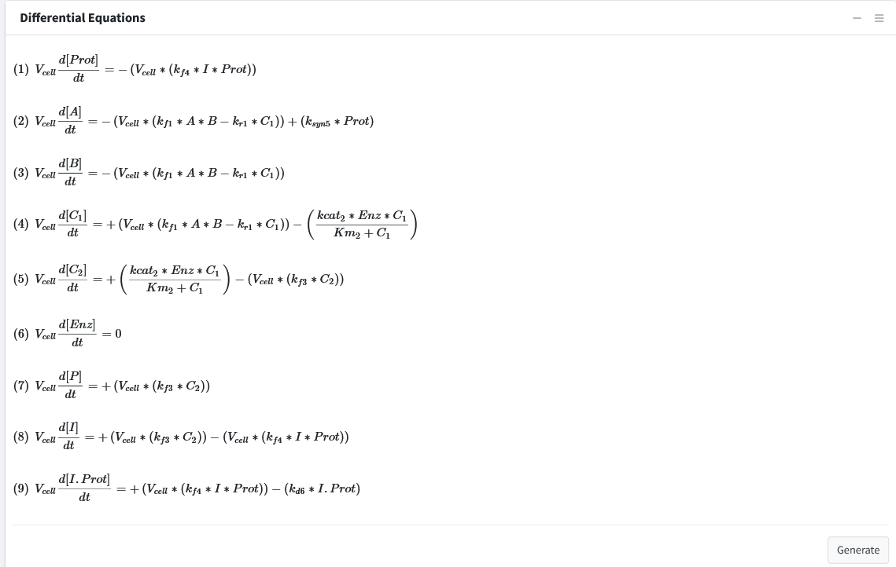
Note: The right sidebar of the “System of Differential Equations” box has an option for viewing the differential equations including turning off the math rendering and showing each derivation line as a newline for each differential equation.
Solve Model
Navigate to the “Execute Model” tab on the lefthand tabbar. This tab solves our model and provides us with the options to customize the solver. For this model, we will just solve using the standard options:
Enter the following times: Starting = 0, End = 15, Step = 0.1, Unit = min. This generates the model to be solved and integrated at time points 0, 0.1, 0.2…..14.8, 14.9, 15.
Press the “Run Solver” button.
An output table should be generated with the concentration of each species along each time step of the solved model.
You can download this solved model data to a csv file in the download tab on this page. Post processing is not used in this tutorial.
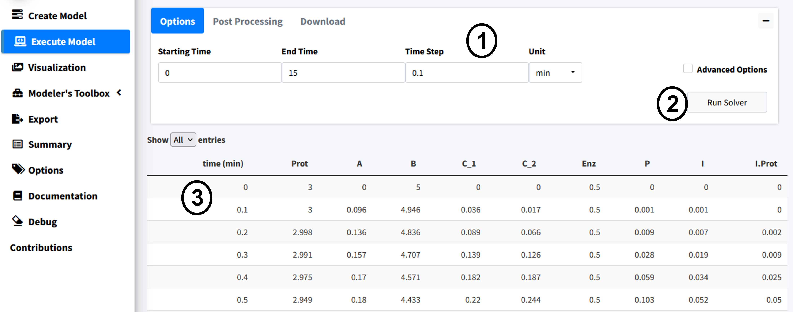
Visualize Model
This section will cover how to visualize our created model.
Navigate to the “Visualization” tab on the lefthand tabbar.
The plotting tab has four modes, we will cover two of them. In this section we will cover “Normal Plot” which is the default when you enter the tab. The tab auto loads the plot when the model is solved, plotting all species of the model. These are the main features of the plot:
Variables - Changes what species are plotting in the model. All species in model are plotted by default.
Download - Dropdown containing options to download plot.
Options - Dropdown containing the following:
Plot mode - Changes the plotting types and features. Here we are plotting “Normal Plot”.
Plot Renderer – type of plot used. “plotly” is an interactive plot while “ggplot2” is the standard R plotting. The interactive is the default as it allows you to interact with the data using features such as zoom, pan, and hovering over data to view its value.
Plot - Plot area with adjustable sizing on bottom right corner.
Plot Options – Four dropdowns that allow the addition of labels, change of axis sizing, and control of line color and size.
Boxes containing menus to change model variables and import datasets to plot.

By default the page should look like above when this tutorial model is solved. All variables are displayed using a evenly spaced rainbow pattern coloring.
Press the “Variables” dropdown to change the species plotted in the graph. Press the “x” on the species to remove them. The “Select All” button reselects all species while the “Reset” button removes all species.
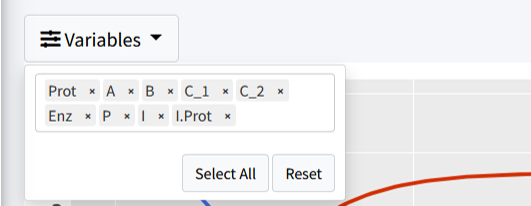
Let’s remove the following species to clean the plot up:
C_1
C_2
Enz
We now have a less cluttered plot:
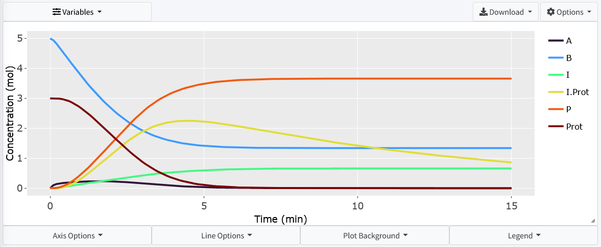
The interactive plot uses Plotly (https://plotly.com/r/plotly-fundamentals/) as a render and includes many of its base features including:
By clicking on a variable in the legend, they can be removed from the plot.
Double clicking a legend variable will remove all species but that one from the plot.
The top right bar includes options to pan, hover, and zoom the plot.
Press, hold, and drag the mouse on the plot to select specific features.
By hovering over lines on the plot, a popup will show with the values at that point.
There are many features included to let the user make the plot there own. These are all located in the dropdowns below the plot. Here, almost any feature of the plot is customizable. Feel free to play around and make the plot your own.
Export
BioModME allows the built model to be exported into 4 main categories:
Prebuild, ready to run code, for either MATLAB or R.
An “.rds” file (type of R data file) that can be reloaded into the program. This is the way to save and load a model into the program currently.
A prebuild latex document all main model information.
Downloading tables for parameters, equations, and initial conditions in csv, txt, or pdf form.
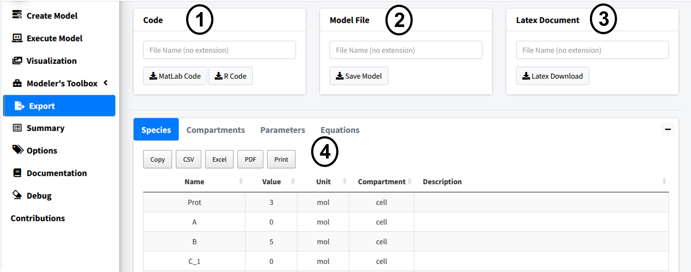
Feel free to try the code export if you have an interest in solving your model in those programming languages. Make sure to give any downloaded file a name.
Latex
When downloading the latex document a popup will appear, showing further customization options for that document.
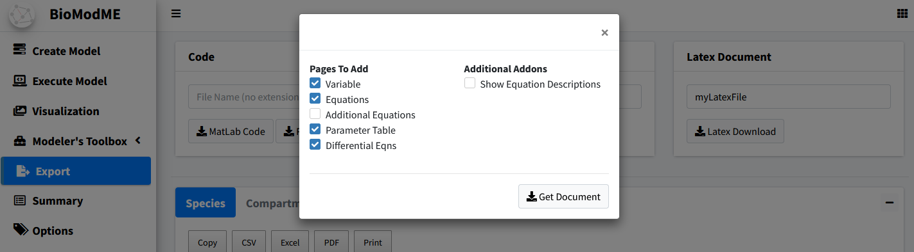
In this example, we will remove the “Additional equations” page as we did not create any non-standard equations. The generated document is created as a text file that can be copied to our latex editor of choice and run. I recommend using overleaf (www.overleaf.com) but any TeX editor will work. Below is a figure of the overleaf output:
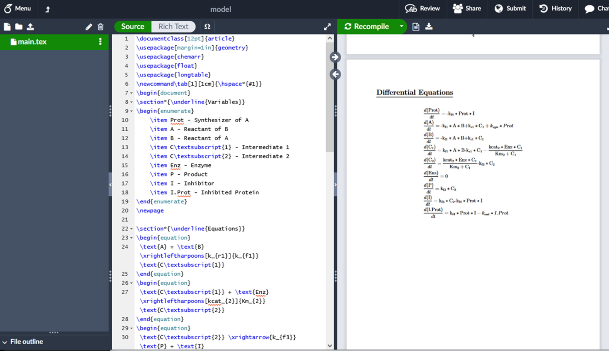
Multi-Compartmental Model
A bolus of a neutral drug “A” was administrated intravenously (i.v.) at time t = 0. Within the liver, “A” can diffuse (unidirectional) from liver blood region tissue liver tissue region via facilitated diffusion with Vmax (nmoles/min) and Km (Molar). Within the liver cells, “A” is converted to “B” via a chemical reaction that follows the law of mass action with a first order rate constant k1 (1/min). The product “B” can also diffuse (simple diffusion) between liver tissue region and blood region with a permeability-surface area product PS (ml/min). Within the kidneys, “B” is excreted from the blood region via a linear process with a rate constant ke (1/min).
{kind=link}
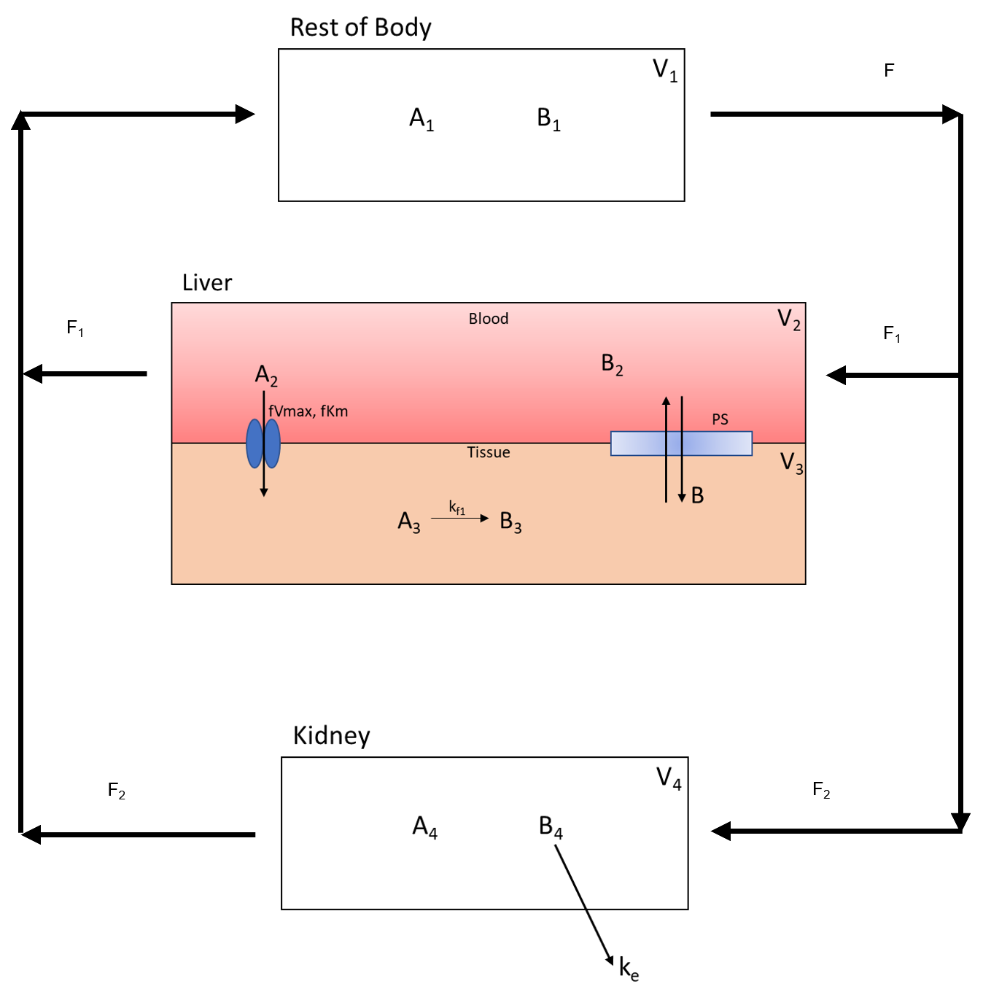
The following are the parameter and concentration tables for the model:
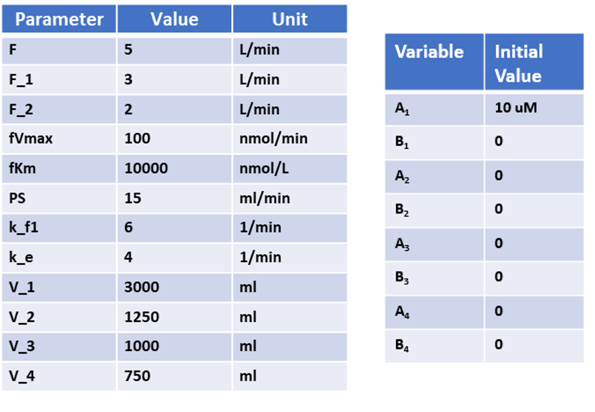
In the following sections of this tutorial, we will design the above multi compartment method.
The contents focus on:
Adding multiple compartments.
Adding variables between compartments.
Properly assigning flows between compartments
Using transporters to pass species between compartments.
To use the online version of this application visit https://biomodme.ctsi.mcw.edu/. Note this app is stored on an Rshiny server that close unused applications after 15 minutes of inactivity. Your current model can be downloaded in the “Export” tab as an .RDS file and can be loaded in by opening the right sidebar of the application. The application can also be directly downloaded at https://github.com/MCWComputationalBiologyLab/BioModME and opened using the R programming language using stand shiny app protocol.
Constructing Model
This section will cover how to build and construct a model.
Create Compartments
We will start by setting up our four compartments in this model: Rest_Of_Body, Liver_Blood, Liver_Tissue, Kidney.
Steps:
Go to the Compartments box in the Create Model tab.
Press the “+”” button three times to add three comparments.
Change the Names of the compartments in the table to Rest_Of_Body, Liver_Blood, Liver_Tissue, and Kidney.
Volume names are autogenerated with numerical numbering.
Change the volume value and units to match parameter table (these values can also be changed in the parameter table for the model).
The end result should be the following table:

Define Variables
There are two variables (A & B) to add to all four comparments. We will make use of the “Add To All Compartments” option to quickly add the same species to all compartments.
Steps:
Select the “Add To All Compartments” checkbox.
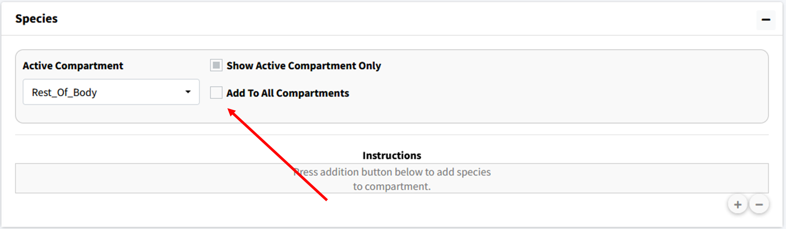
Press the “+” button to generate a popup.
In Popup type “A B” separated by a space. Check “Numerical” instead of “Compartment Name” and press the add button. This will add the variables A_1, A_2, A_3, A_4, B_1, B_2, B_3, and B_4 to the model.
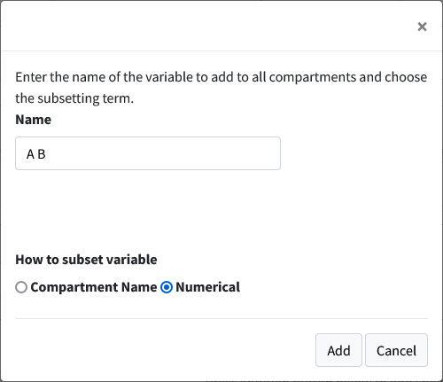
Unselect the “Show Active Compartment Only Checkmark” to see all the species in the model.
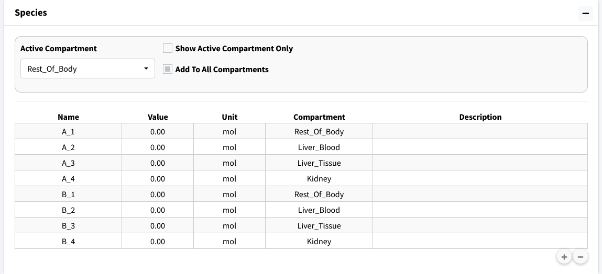
Change the concentration of A_1 to match initial condition table.
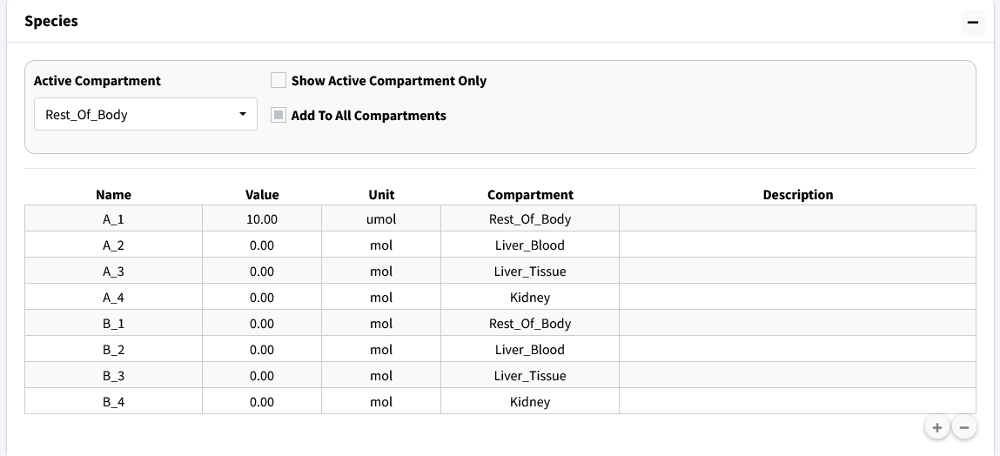
Add Equations
This tutorial model has only one reaction: the conversion of A to B (A3 & B3) in the liver tissue.
{kind=link}
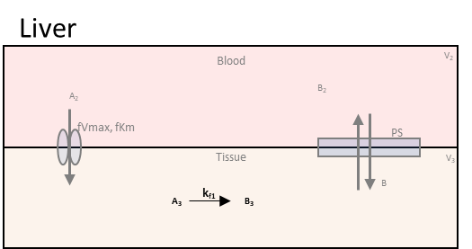
Steps:
Scroll down to the Reactions box in the Create Model tab. Press the addition button below the equation table.
Change the Active Compartment to “Liver_Tissue”.
Make sure Mass Action is selected as the Law for this reaction. Change the Reaction Direction to “Forward” for this is a one way reaction.
This reaction has one reactant and one product. Make sure Reactant 1 is A_3 and Product 1 is B_3. Make the Forward Rate Constant to k_f1, if not already. You can set the parameter value here or later on the parameter table. For this tutorial most values will be set on the parameter table.
Press the Add Equation button.
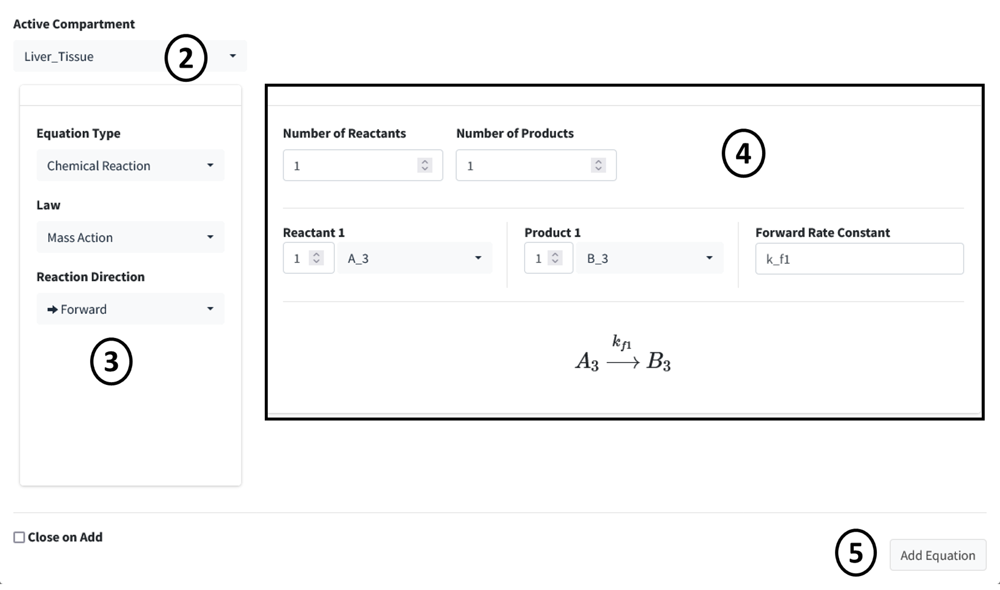
Add Compartment Inputs/Outputs
In this section of the tutorial, we will cover how to add flows, inputs, and outputs of compartments to the model. Begin by scroling to the Input/Output box on the Create Model tab. Press the addition button to begin adding the below flows between species information. Again, here is the overall flow model:
In each subsequent section we break down the flows into individual components.
1. Flow Out of Body
The flow out of the Rest_Of_Body is split into two flow rates as it moves speices A and B to the Liver_Blood and Kidney. Below is the part of the flow diagram we will be entering:

In Options select Flow Between Compartments. This is used to account for flows leaving one compartment and entering one or more compartments.
Select the Split Flow checkbox. This option is selected when one outflow is being split into multiple flows. Keep Number of Splits to 2 as we are spliting the flow to two compartments.
Set the information for the compartment the flow is leaving from. It has the following specifications:
Flow_Out_of: Rest_Of_Body
Species Out: A_1
Flow Variable: F
Flow Value: 5
Current specifications need to have species in flow entered one at a time. Meaning a new flow will be added for species B. With all paramters, values can be changed at a later time in the parameter section.
Set the information from the first split flow into Liver_Blood. Enter the following:
Flow_Out_of: Liver_Blood
Species Out: A_2
Flow Variable: F_1
Flow Value: 3
Set the information from the second split flow into Kidney. Enter the following:
Flow_Out_of: Kidney
Species Out: A_4
Flow Variable: F_2
Flow Value: 2
Press the Add button to add this flow. You can select the Keep Active checkbox on the bottom of the page to prevent this page from closing on pressing the add button.
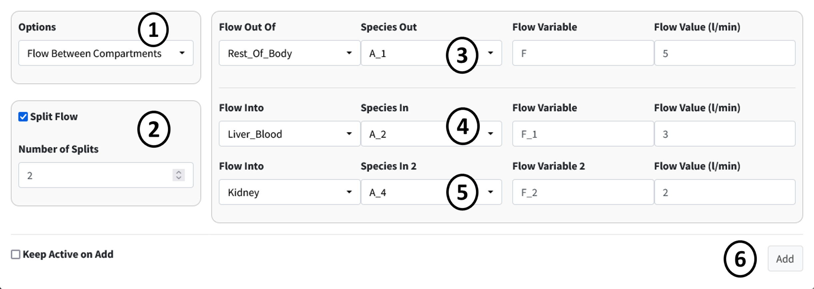
Repeat the previous steps for species B. This should involve only changing the Species dropdowns.
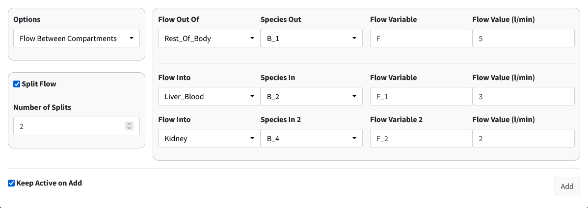
Note
When adding B, we are reusing the flow variables F, F_1, and F_2. BioModME allows multiple saving of parameters but will check that the parameters have the same base unit. If not, the parameter will be rejected. The value for the parameter will overwrite on each new overwrite of the parameter.
2. Flow Back: Liver to Body
The flow back from the liver to the rest of the body looks like:

This is like the previous step but with the compartments switched around.
Steps:
Make sure Options is still on Flow Between Compartments.
Turn off Split Flow.
Set the information for the compartment the flow is leaving from. It has the following specifications:
Flow Out Of: Liver_Blood
Species Out: A_2
Flow Variable: F_1
Flow Value: 3
Set the information for the compartment the flow is entering. It has the following specifications:
Flow Into: Rest_Of_Body
Species In: A_1
Press the Add button to add this flow.

Repeat the previous steps for species B. This should involve only changing the Species dropdowns.
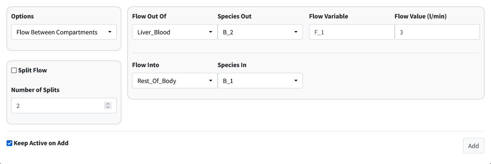
3. Flow Back: Kidney to Body
The flow back from the kidney to the rest of the body is:

Steps:
Make sure Options is still on Flow Between Compartments.
Check that Split Flow is off.
Set the information for the compartment the flow is leaving from. It has the following specifications:
Flow Out Of: Kidney
Species Out: A_4
Flow Variable: F_2
Flow Value: 2
Set the information for the compartment the flow is entering. It has the following specifications:
Flow Into: Rest_Of_Body
Species In: A_1
Press the Add button to add this flow.
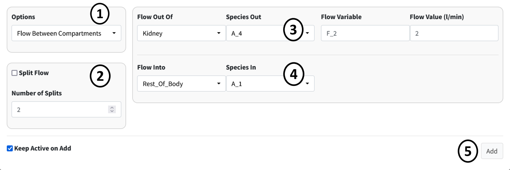
Repeat the previous steps for species B. This should involve only changing the Species dropdowns.

4. Clearance of A From Kidney
Drug A is excreted from the kidney at a constant rate. The isolated process is shown below:
{kind=link}
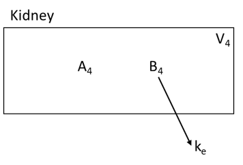
Steps:
Select Clearance in the Options dropdown.
Enter the following information in the main box:
Compartment: Kidney
Species: B_4
Rate: k_e
Press the Add button to add the clearance of B from the kidney.

5. Facilitated Diffusion of A
The next two seconds will look at diffusion processes from the liver blood to the liver tissue and back. Below is the facilitated diffusion of molecule A from the liver blood to the liver tissue.

Steps:
Select Facilitated Diffusion in the Options dropdown.
Enter the following information in the first row of the main box:
From Compartment: Liver_Blood
From Species: A_2
Vmax: fVmax_1
Km: fKm_1
Enter the following information in the second row of the main box:
To Compartment: Liver_Tissue
From Species: A_3
Press the Add button to add this filitated diffusion flow to the model.

6. Simple Diffusion of B
{kind=link}
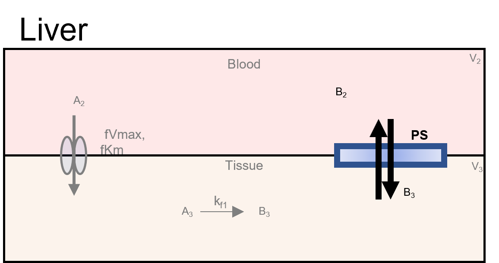
Steps:
Select Simple Diffusion in the Options dropdown.
Enter the following information in the first row of the main box:
Compartment: Liver_Blood
Species: B_2
Diffusivity Coefficient: PS
Enter the following information in the second row of the main box:
Compartment: Liver_Tissue
Species: B_3
Note
The order of entered compartments and species does not matter for simple diffusion.
Press the Add button to add this simple diffusion flow to the model.
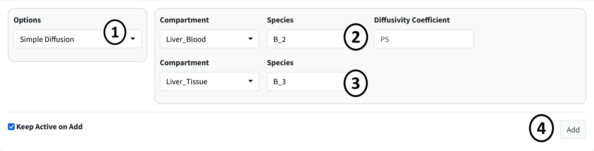
This should we the last term entered in the Input/Output box. There should be nine terms in the results table.
Parameters
Navigate to the next box: Parameters.
Below is the generated parameter table that has been created so far by the above entered information. All descriptions are pregenerated based on where the parameter originated. Like other tables, all values are editable.
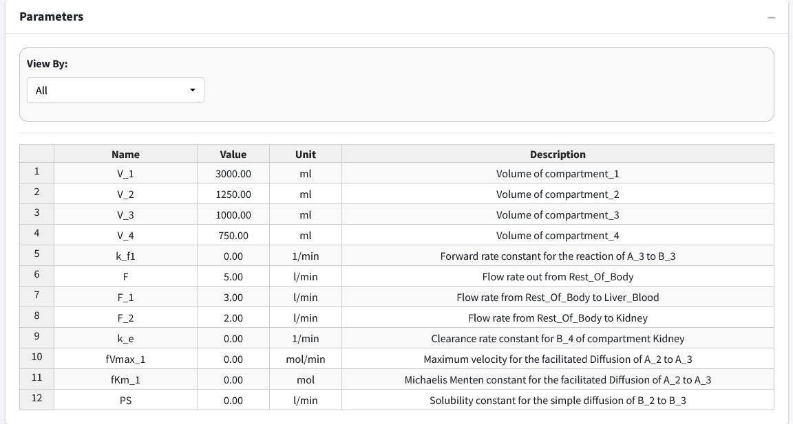
The parameter values for the model are as follows:
{kind=link}
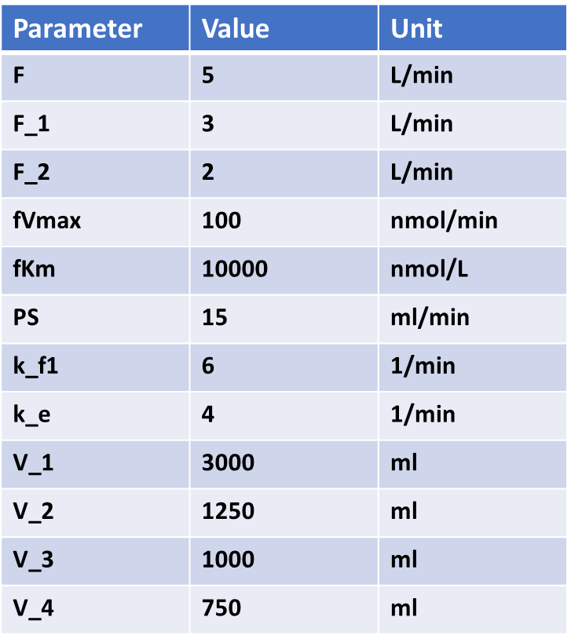
The below figure shows the parameter table with the values entered.
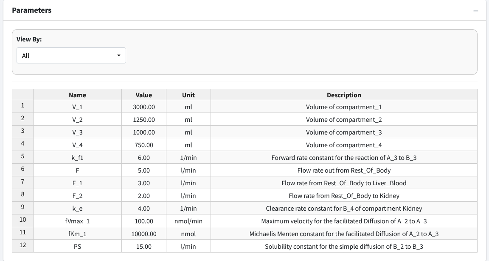
Note
In the Figure above, we did not keep the units of our parameters consistent. In some cases, ml was used and in others liters was used. This is okay. The application converts all units to a “base” unit in the background and performs all calculations at that base level.
Differential Equations
Navigate to the final box “Differential Equations”.
This tab is used to generate and see the mathematical equations that govern our model. This tab will begin with all species being equal to “NA” until the generate button is pressed or model is executed.
Press the “Generate” button to solve the system for its differential equation output and display them in text form.
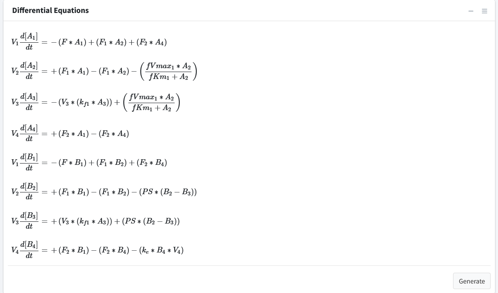
Note: The right sidebar of the “System of Differential Equations” box has an option for viewing the differential equations including turning off the math rendering and showing each derivation line as a newline for each differential equation.
Results
In this section, we will cover exectuting the model and its different outputs.
Solve Model
Navigate to the “Execute Model” tab on the lefthand tabbar. This tab solves our model and provides us with the options to customize the solver. For this model, we will just solve using the standard options:
Enter the following times: Starting = 0, End = 5, Step = 0.001, Unit = hr. This generates the model to be solved and integrated at time points 0, 0.001, 0.002…..5.998, 5.999, 6.
Press the “Run Solver” button.
An output table should be generated with the concentration of each species along each time step of the solved model.
You can download this solved model data to a csv file in the download tab on this page. Post processing is not used in this tutorial.
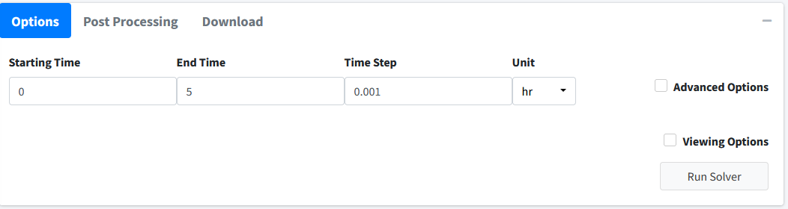
Note
BioModMe is set by default to show the results table rounded to 3 digits. Most terms in these results at the beginning will round to 0. To change this, check the Viewing Options box and turn off the Round option or turn on the Scientific Notation option.
Below is how the table for this model should look after the initial solve:
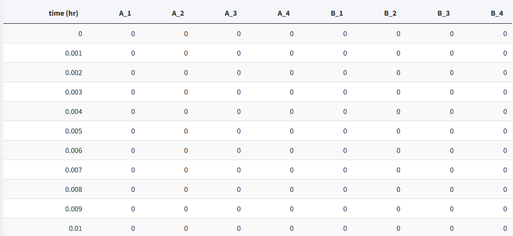
To see the values for the model in a good form, we will change the viewing options:
Click the Viewing Options Checkbox.
Change Results Units to umol.
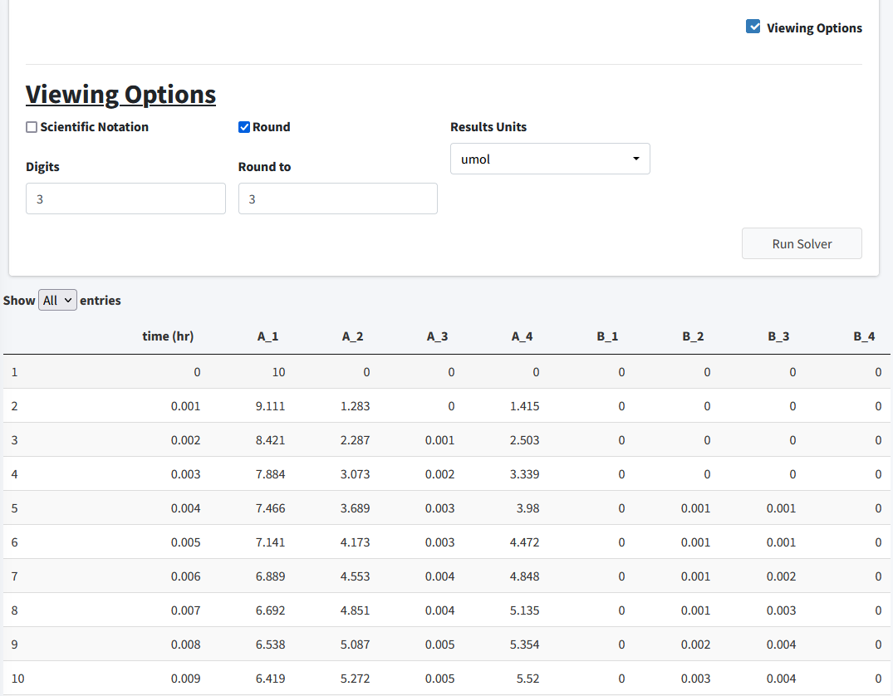
In this section, we will examine the plotting of this model.
Visualization
Move to the Visualization tab. The starting plot from the model should look like the following:
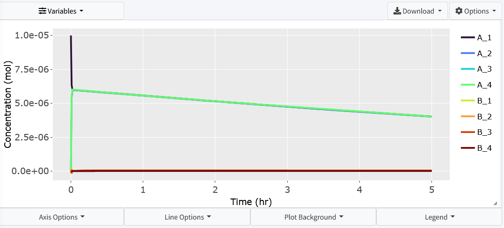
For this problem we want to examine how the concentration of A varies throughout the bloodsteam (A_1, A_2, A_4). Click the Variable dropdown and remove all necessary variables:
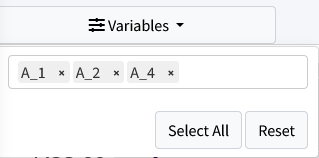
The resulting plot should look like:
Parameter Estimation Tutorial
This is a basic parameter estimation tutorial. To download the example data used in this tutorial go to https://github.com/Jwomack7512-bio/BobTheBuilder/blob/main/shared_files/Nicotine_cigarette.csv.
We assume you have basic knowledge of creating a model and will skip showing every step of that process. Please see the parameter estimation documentation for details on the solver and options available to use in the solver.
We will construct the following simple three compartment model:
In the above diagram, we model the concentration of a drug, Nicotine (C), as it moves from the alveoli of the lungs, through the plasma of the body, and a compartment summarizing various tissues of the body. We assume Nicotine flows out of the alveoli with flow rate (F_1), into the plasma of the body. From there, Nicotine diffuses to various tissues of the body through simple diffusion (PS) and is also removed from the plasma at a flow rate of F_2. In this model, we are unsure of the value of PS and will use parameter estimation to estimate the value from experimental data that found the concentration of nicotine in the plasma at various timepoints. The starting concentration of C in the alveoli is 1.2 mol.
Build Model
To being buiding the model, we will add our three compartments with their corresponding volumes:
Compartment: Alveoli, Volume = 1 L
Compartment: Plasma, Volume = 7.8 L
Compartment: Various_Tissues, Volume = 9.5 L
Next, we will add a concentration (C) variable for nicotine to each compartment and give an initial concentration of 1.2 mol to C_1.

Next, we need to add the compartment input/outputs. We have three to add:
Flow between Alveoli and Plasma
Flow out of Plasma

Simple diffusion between Plasma and Various_Tissues

With all our model components constructed, we need to assign parameter values. We do not know the value of PS but we will give the model a reasonable starting estimate (0.5 L/min).

Note
The parameter table rounds to two decimal places. This is why F_2 shows as 0.08 in the table. If you double click the value it will show as the appropriate 0.078.
For reference, here are the solved differential equations:
Move to the Execute Model tab and enter the time for this model:
Start Time = 0
End Time = 70
Time Step = 1
Unit = min
The beginning of the results table should look like this:

Visualize Model
Move to the Visualization tab. A starting plot should be generated that looks like:
We want to examine the the concentration of Nicotine in the plasma (C_2). Go into the Variables dropdown and remove variables C_1 and C_3.
We should import our data for Nicotine in the plasma to overlay with the plot. Scroll below the plot to the box header that is titled Import Data. Browse your desktop for the nictoine dataset. Which can be downloaded from our Github. Be sure to click the Apply Overlay checkbox to show the imported data. For importing data, the first row of the data is the headers. The first column should be time while the remaining columns should be your concentrations at those times. The header names have to match the model names for the data to be correctly plotted.
The resulting plot should look like the figure below:

In this overlayed plot, we can see our model has the general shape of our data but doesn’t quite mimic it well. We will run parameter estimation for PS to see if we can find a better fit.
Perform Parameter Estimation
Go to the Modeler’s Toolbox Tab, subtab Parameter Estimation. Here, we will start by importing our data into this module.
Move to the next box on the page Select Parameters. Use the dropdown to select PS.
There are five columns in the generated table. They are as follows:
Parameters - the selected values to estimate.
Initial Guess - the starting value to begin parameter estimation at.
Lower Bound - the lowest acceptable value this parameter can be.
Upper Bound - the highest acceptable value this parameter can be.
Calculated Value - the found value from parameter estimation after calculations.
Values for Lower and Upper bound can be left blank if no bounds want to be used. Here we use the following:
Initial Guess - 0.50
Lower Bound - 0
Upper Bound - 1
Press the Run button and the program should output a value of approximately 0.10.
The next box Estimation Results will contain the model fit of the variable with its corrsponding data along with the results of the iterations of the parameter estimation algorithm.

Press the Store button to overwrite your current parameters in the model with the estimated values.
Note
You can estimate as many parameters as you want with this setup. Just note that the more uncertainy you introduce into your model the longer the algorithm can take to find a solution. It can also affect the probability of finding a solution.
Welcome to BioModME’s documentation!
BioSysMod is an application that is meant to streamline building biological computational models. It is an all-in-one tool that allows the user to build a model, solve for its mathematical equations, and plot all relevant features.
First Steps
Are you new to BioModME or computational modeling? This is the place to start!
Access: Online Application | Download
Tutorials: Basic Model | MultiCompartment Model
How the documentation is organized
The documentation is split into the following sections:
- Getting Started
Contains all the information on accessing/downloading the application for use.
- API
Explains the specifics of tabs and pages of the application. If you are wondering what a specific option or button does, this is the place to check!
- Mathematical Information
This section contains all the mathematical explainations that goes into solving the mathematical differential equations. See how the equations are derived or what a specific equation building option results in.
- Tutorials
Great place to start to learn the ins and outs of how to use BioModME. We provide tutorials for multiple model types and tutorials on how to use some of the more tricky features of the application.
Links
Source Code (stable): https://github.com/MCWComputationalBiologyLab/BioModME
Source Code (dev): https://github.com/Jwomack7512-bio/BobTheBuilder
Home Page: https://biomodme.ctsi.mcw.edu/
Contact: jwomack@mcw.edu, rdash@mcw.edu